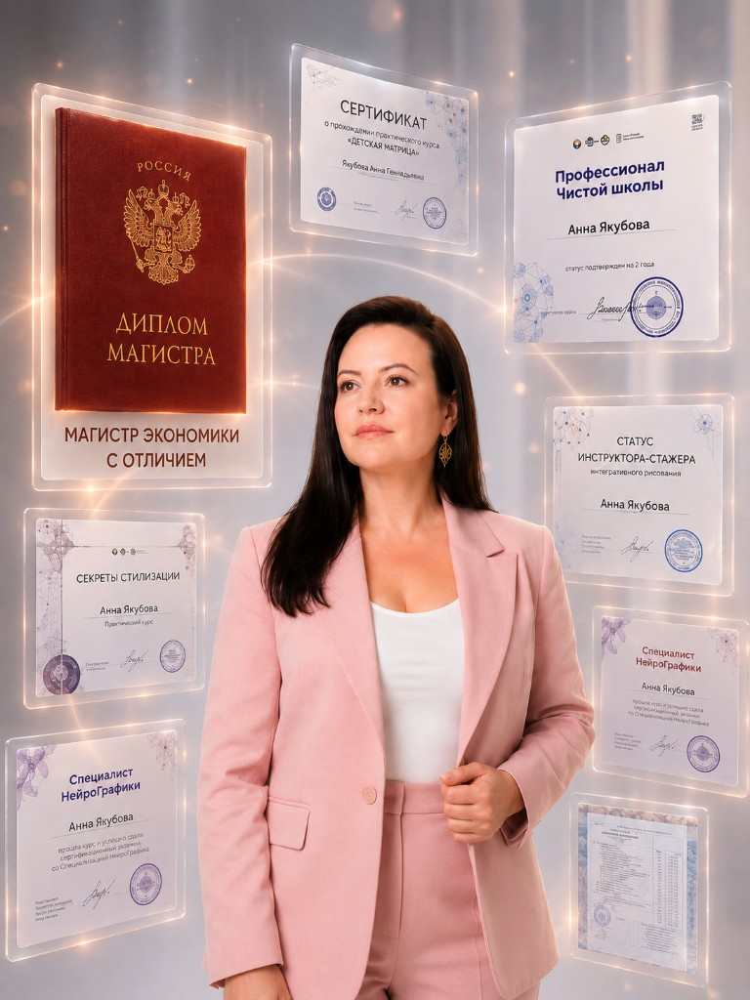

☽
Матрица Судьбы
Раскройте код своего предназначения. Поймите жизненные задачи, таланты и кармические уроки через древнюю систему числовой матрицы.
ПодробнееЯ помогаю раскрыть свой потенциал через Матрицу Судьбы, нейрографику и интегративный подход — мягко, глубоко и в согласии с природой вашей души.
Направления
Каждое направление — самостоятельный инструмент трансформации. Вместе они создают целостный интегративный подход.
Раскройте код своего предназначения. Поймите жизненные задачи, таланты и кармические уроки через древнюю систему числовой матрицы.
ПодробнееТворческая практика, которая перестраивает нейронные связи. Снимите блоки, снизьте тревожность и обретите внутренний покой через рисование.
ПодробнееСинтез Матрицы Судьбы, нейрографики и телесных практик для глубокой и устойчивой трансформации на всех уровнях.
Подробнее
Обо мне
Я — проводник в мир осознанности и гармонии. Моя работа основана на мягком, природном подходе: как травы и деревья находят баланс в лесу, так и мы можем обрести равновесие внутри себя.
Энергия Жрицы — интуиция, тишина, глубина — пронизывает все мои практики. Я верю, что каждый человек уже несёт в себе ответы, и моя задача — помочь их услышать.
С чего начать?Выберите квиз — быстро найти направление или глубже исследовать свой потенциал через «Древо потенциала».
Выбрать квиз